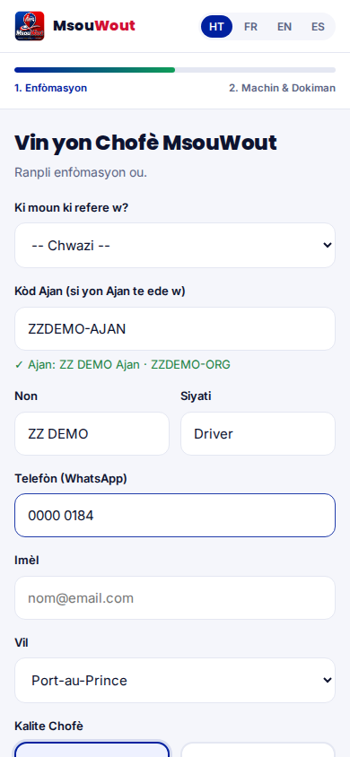
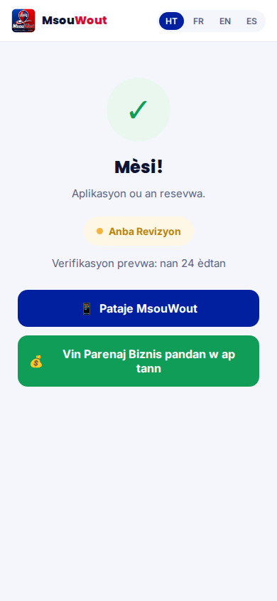
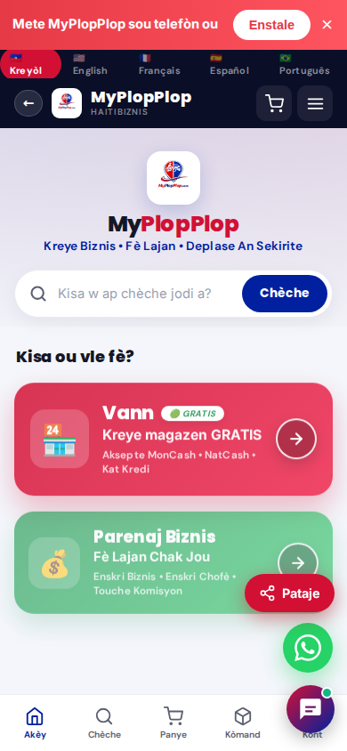
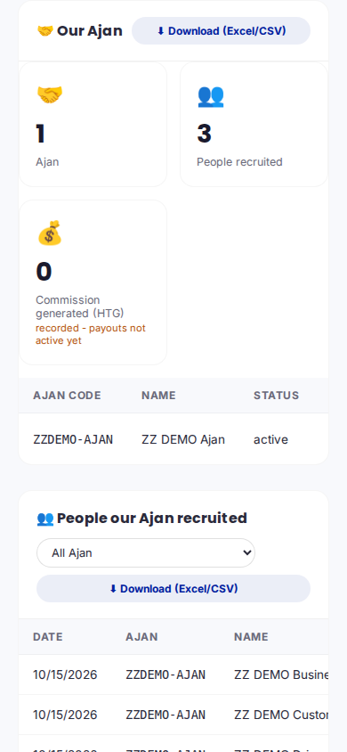
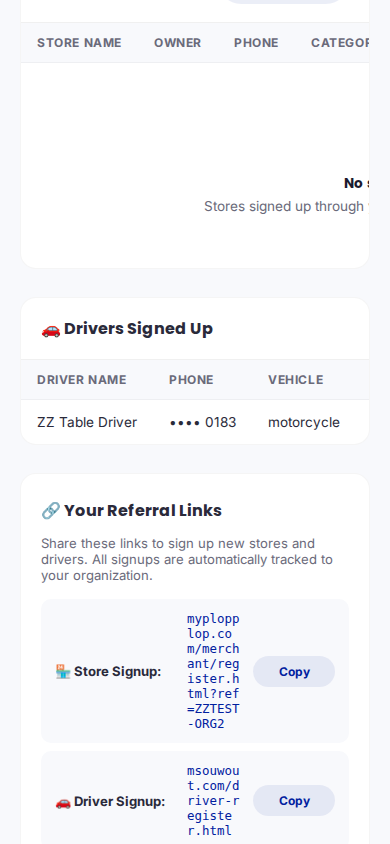
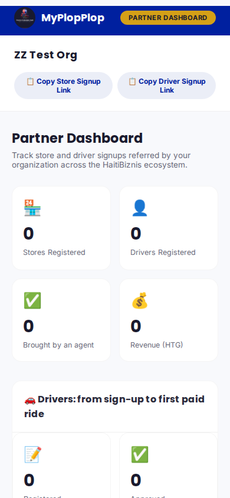
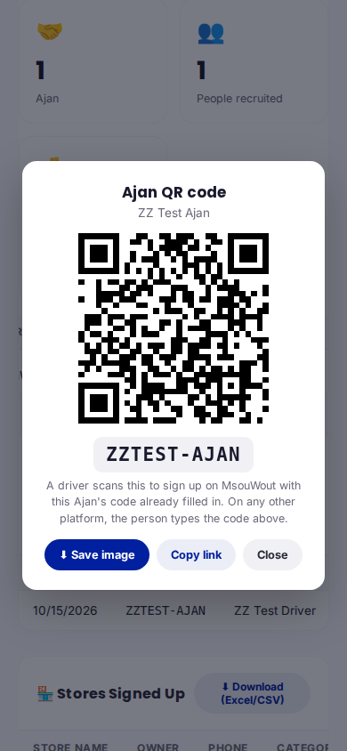
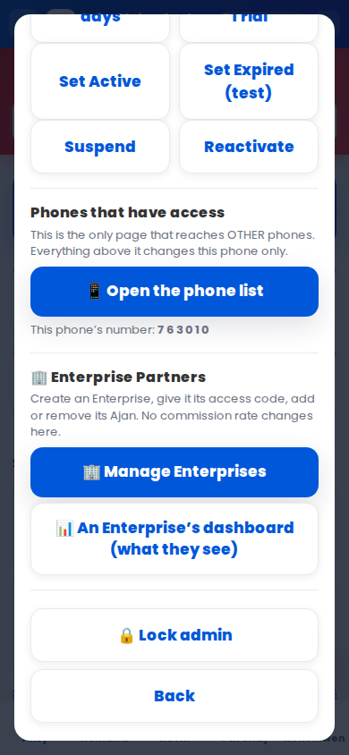

A test Enterprise "ZZ DEMO Enterprise" with one test Ajan "ZZDEMO-AJAN". Then three real signups through the real public screens: a MsouWout driver, a MyPlopPlop customer and a MyPlopPlop business. Everything was deleted afterwards.
The Ajan code is already filled in and confirmed live: the Ajan and the Enterprise are named under the box.

The driver's application is received. The rides service passed the code to the Ajan system, which credited the driver to the Ajan AND to the Enterprise.

The customer opened the Ajan's link, created an account on the normal signup screen and landed here, on the home page. Nobody typed the code: the site sent it with the signup by itself. Same for a business account.

1 Ajan, 3 people recruited (driver, customer, business), commission recorded, payouts not active.

This table used to say "No drivers yet" for ever. It now lists the Enterprise's drivers, phone shown as the last 4 digits.

On the Enterprise dashboard (myplopplop.com/partner-dashboard.html): every person recruited, which Ajan brought them, driver/business/customer, platform and date. Phone numbers show the last 4 digits only. Filter by Ajan, download to Excel.

Tap "QR" next to an Ajan. A driver scans it and the MsouWout driver signup opens with that Ajan's code already filled in. Save the image to print or send it on WhatsApp.

"Manage Enterprises" opens your organizations page: create an Enterprise, give it its access code, suspend it, and now link or unlink Ajan (check first, then confirm). No commission rate changes there.
